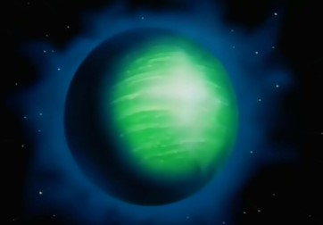

Academy history
-เตรียมอนุบาลถึงชั้นประถมศึกษาปีที่6 เรียนที่โรงเรียนบ้านสันป่าเหียว
-ชั้นมัธยมศึกษาปีที่1ถึงชั้นมัธยมศึกษาปีที่3 เรียนที่โรงเรียนสายอักษร
-ชั้นมัธยมศึกษาปีที่6 เรียนที่โรงเรียนฝางชนูปถัมภ์
Language
-ภาษาไทย
-ภาษาฝรั่งเศส
-ภาษาสเปน
-ภาษาญี่ปุ่น
Performance
-ระบบธนาคาร
-พัฒนาเกมLOL
-ออกแบบระบบให้ NASA
Skill
-ความเร็วในการบิน : 5 มัค (ทว่าเมื่ออยู่ในอวกาศเขาจะกลายเป็นลูกบอลสีแดงแล้วเดินทางด้วยความเร็วแสง)
-ความเร็วในการเคลื่อนที่ในน้ำ : 120 น็อต
ความเร็วในการเคลื่อนที่ในน้ำ : 120 น็อต
ลำแสงสเปเซี่ยม : ท่าไม้ตายที่อุลตร้าแมนเชี่ยวชาญมากที่สุดและจัดเป็นลำแสงทำลายที่ทรงอานุภาพมาก ซึ่งจะปล่อยลำแสงสปาร์คออกมาโดยการไขว่มือขวาที่มีพลังประจุลบและมือซ้ายที่มีพลังประจุบวกเข้าด้วยกัน ลำแสงชนิดนี้จะมีคุณสมบัติเหมือนกับพลังงานจากธาตุสเปเซี่ยมที่มีอยู่บนดาวอังคาร ท่านี้สามารถยิงออกมาได้แม้บินอยู่กลางอากาศ ทั้งยังสามารถยิงแบบต่อเนื่องหรือยิงเป็นเวลานานได้ตามแต่กรณี ผู้ที่ตั้งชื่อท่านี้ก็คือ กัปตันมุรามัตซึ และ จนท.ฟูจิ
อุลตร้าสแลช : เรียกอีกชื่อหนึ่งว่า "กงจักรแปดเสี้ยว" ซึ่งเป็นท่าตัดที่ใช้พลังงานสเปเซี่ยม สร้างเป็นรูปวงแหวนขึ้นมาแล้วเขวี้ยงออกไป ท่านี้ถูกใช้เป็นครั้งแรกในขณะที่ลำแสงสเปเซี่ยมถูกแสงสะท้อนสเปลเก้ของมนุษย์ดาวบัลตั้นรุ่นที่ 2 สะท้อนกลับมา หลังจากนั้นท่านี้ก็ถูกใช้ในศึกปะทะกับกุบิล่า, เรดคิงส์รุ่นที่ 2, มนุษย์ดาวเมฟิราส, คีย์ล่าร์และ เซ็ทต้อน แต่ว่ามักถูกสะท้อนกลับมาได้ซะส่วนใหญ่
ลำแสงอุลตร้าแอทแทค : สุดยอดท่าไม้ตายก้นหีบที่ใช้กับ เคโรเนีย เมื่อลำแสงสเปเซี่ยมใช้กับมันไม่ได้ผล ท่านี้จะเป็นการรวบรวมพลังงานทั้งหมดในร่างกายแล้วปล่อยออกมาเป็นรูปวงแหวน จากมือข้างขวาและเมื่อถูกเป้าหมายแล้วคลื่นพลังงานก็จะไปครอบคลุมตัวเคโรเนียทั่วทั้งร่างจนทำให้มันแข็งตัวไปในชั่วพริบตา จากนั้นอุลตร้าแมนก็จะผสานแขนเป็นรูปกากบาทแล้วส่งคลื่นพลังจิตพิฆาตออกไป เพื่อทำให้ เคโรเนีย แหลกระเบิดเป็นเสี่ยงๆ หลังจากนั้นท่านี้ก็ไม่ได้ถูกนำมาใช้อีกเลย
สายธารอุลตร้า : เป็นท่าที่ฉีดน้ำจำนวนมากออกมาจากปลายนิ้วมือ โดยการนำ ไฮโดรเจน และ ออกซิเจน ในอากาศมาหลอมรวมเข้าด้วยกัน ส่วนใหญ่จะถูกใช้ในตอนดับเพลิงขณะเกิดอัคคีภัยร้ายแรง โดยในตอนที่ไฟไหม้นิคมอุตสาหกรรมจากฝีมือของ เปสเตอร์ ท่านี้ก็ช่วยดับไฟได้เป็นอย่างดี ซึ่งตอนนั้นอุลตร้าแมนจะโพสท่าโดยยื่นแขนขวาออกไปข้างหน้า นั้นท่านี้ยังถูกใช้กับ จามิล่าร์ ซึ่งไม่ถูกกับน้ำ โดยในตอนนั้นอุลตร้าแมนจะประสานมือไว้ตรงอก
แคชริง : มีอีกชื่อหนึ่งว่าลำแสงพันธนาการโดยใช้การหมุนตัวด้วยความเร็วสูงบนหัวของคู่ต่อสู้เพื่อสร้างโซ่แสงออกมาทั่วร่างแล้วผนึกการเคลื่อนไหวของศัตรูเอาไว้และจะหมุนตัวลงมาบนพื้นดินโดยที่ยังหมุนไปเรื่อยๆเพื่อคงพลังเอาไว้ ท่านี้ถูกใช้ในตอนที่สู้กับเซ็ทต้อน แต่ในจังหวะที่อุลตร้าแมนหมุนตัวลงมาบนพื้นดินก็ถูกโจมตีด้วยลูกไฟสกัดกั้นการหมุนได้เสียก่อน ดังนั้นพลังของวงแหวนจึงด้อยลงและถูกฉีกขาดอย่างง่ายดาย
อุลตร้าแอร์แคช : ท่าที่ทำให้ศัตรูหยุดนิ่งอยู่กลางอากาศโดยใช้พลังจิต ท่านี้ถูกใช้ในตอนที่สู้กับ เรดคิงส์รุ่นที่ 2 ที่กลืนระเบิดไฮโดรเจนเข้าไปเพื่อหยุดการเคลื่อนไหวของเรดคิงส์ซึ่งไม่สามารถโจมตีแบบบุ่มบ่ามได้ หลังจากนั้นมันก็ถูกตัดคอและลำตัวด้วยท่ากงจักรแปดเสี้ยวซึ่งต้องอาศัยการเขวี้ยงอย่างแม่นยำ
เทเลพอร์เทชั่น : ท่านี้ถูกใช้ในตอนที่ มนุษย์ดาวบัลตั้นรุ่นที่ 2 บุกโจมตีสถานที่ 2 แห่งพร้อมกัน โดยการเคลื่อนย้ายที่จากดาวเคราะห์ R มายังโลกเพียงชั่วพริบตา แต่ว่าท่านี้จะทำให้อุลตร้าแมนต้องสูญเสียพลังเป็นอย่างมากและทำให้อายุขัยของเขาต้องสั้นลง นี่จึงถือเป็นท่าลับสุดยอด
Contact
สามารถติดต่อได้ที่ดาวนาเม็ก

ดาวนาเม็ก (Nameg) เป็นดาวเคราะห์ที่อยู่ห่างจากโลก 1ล้านปีแสน วิธีจะไปได้คือหายตัวแบบชาวไซย่า